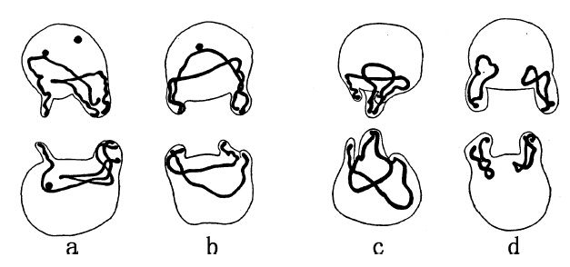

染色体的完整性与连续性
染色体的完整性或其在前后各世代间的连续性，对于染色体理论也是重要的。细胞学家公认，当染色体在原生质内游离出来的时候，它们经历了细胞的整个分裂时期而依然保持完整，不过当它们吸收液汁，联合组成静止核时，它们的存在便无法认出来了。但是采用间接方法，对于静止期内染色体的情况已经可能找到一些证据。
在每次细胞分裂以后，染色体化为液泡，联合形成新的静止核。它们形成了新核内的各个分隔开的小泡，这时还能够追踪一些时候。以后，染色体失去了受染的性能，再不能被分辨出来。到染色体快要再度重现的时候，又可以看到囊状小体。这项事实如果还不能证实，至少是提示了：静止期内的染色体仍然是占有它们的原来位置的。
据Boveri的研究：当蛔虫卵子分裂时，同一对的两条子染色体按照同一方式分离开来，并且往往显出特殊的形状（图25）。当子细胞下次分裂，而子细胞的染色体快要再度出现时，染色体在细胞内依然有着类似的排列。结论是清楚的。各该染色体在静止核内仍然维持其入核时所具有的形状。这项证据支持下一论点：染色体并没有先化为溶液、然后再度形成，而是始终保持它们的完整性。

图25 蛔虫的四对子细胞（上下两头）的细胞核内，子染色体在静止核中出现时的位置（仿Boveri）
最后，又有这样的情况：由于染色体数目加倍，或者由于染色体数目不同的两种生物的杂交，引起了染色体数目的增加。每类染色体可以有三、四条之多，并且一般能在以后所有的分裂中维持同样的数值。
总的说来，细胞学证据虽然不会完全证实染色体在其历史中的完整性，但至少是有利于这项观点的。
但是，对于上文必须加上一项重要的限制：遗传学证据明显地证明，在同对的两条染色体上，若干部分有时发生有秩序的交换。是否有细胞学证据来启示这种交换呢？在这一点上，问题就多了一些。